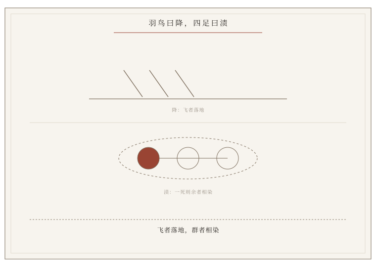

曲礼下 · 二·七十二 · 第 195 课
羽鸟曰降，四足曰渍。注「异于人也。降，落也。渍，谓相瀸污而死也」。
说什么事：禽兽之死，另有二名。
落在哪一层：礼，兼及礼意。论名之及于微物。
为何编在此位：紧接五等人死之名。人既分五，物亦分二，名之用至此而尽。
【经】羽鳥曰「降」，四足曰「漬」。
【注】異於人也。降，落也。漬，謂相瀸汙而死也。《春秋傳》曰：「大災者何？大漬也。」
【疏】鸟、兽死异名也。降，落也。羽鸟飞翔之物，今云其降落，是知死也。「四足曰渍」者，牛马之属也。若一个死，则余者更相染渍而死，今云其渍，则知死也，异于人耳。《春秋传》曰「大灾者何？大渍也」，《公羊》庄二十年「夏，齐大灾。大灾者何？大瘠也。大瘠者何？㾐也」，注云「㾐者，民疾疫也」。然此云渍，彼云瘠，字异而意同也。
羽鸟 飞禽。
降 落。飞者落地，即是死。
四足 牛马之属。
渍 相瀸污。一死则余者相染。
大渍 《公羊》作「大瘠」，疫也。
飞禽之死称「降」，四足之兽之死称「渍」。
两句十个字，给禽兽各一个死名。人的死名分五等，禽兽的死名分两类——礼把万物都编进了名册。
第一层 异于人 注三字。此节全部意义在「异于人」：人自有人之五名，物自有物之二名，不相假借。
第二层 降之取象 疏「羽鸟飞翔之物，今云其降落，是知死也」。飞者之死，取「落」象——一生在空中的东西落地，就是完了。这是以动作为名。
第三层 渍之取象 疏「若一个死，则余者更相染渍而死」。四足成群，一死则相染。此名取的不是个体之死，是群之疫。
第四层 渍与瘠 疏引《公羊》庄二十年「大灾者何？大瘠也」，注「民疾疫也」，断「字异而意同」。同一场疫，经作渍、传作瘠。礼之名与史之笔，在此互证。
与今日何干 「倒毙」「瘟死」这些词，仍在按物类分。人对死物的称呼，比对死人更粗，也更准。
| 左 | 右 |
|---|---|
| 羽鸟曰降 | 飞者落地即死 |
| 四足曰渍 | 一死则余者相染 |
| 异于人 | 人五名，物二名 |
| 降，落也 | 以动作为名 |
| 渍，相瀸污 | 以群疫为名 |
| 大渍＝大瘠 | 字异意同 |
画上下两段。上段：三道从左上方斜向右下的短线（示羽），其下一道水平横线（示地），斜线末端止于横线之上、不穿线。下段：三枚小圆横向相连成一串，最左一枚以实心填满、其外画一道细弧绕住三者（示「相染」）。两段之间以一条浅色横线相隔。不写文字、不画人。赭色只用在最左那枚实心圆。
